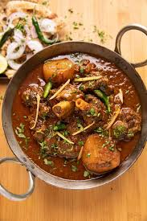

Home
Mutton Recipe

Description :
Mutton is the meat of a mature sheep, typically over one year old. It's known for its stronger,
richer flavor compared to lamb (meat from young sheep). The meat is also typically darker and firmer than lamb.
Ingredients :
- Mutton(often bone-in)
- Onions
- Tomatoes
- Ginger-Garlic paste
- Various spices like turmeric, chili powder, coriander powder, and garam masala
Steps :
- Heat Mustard Oil and Add Spices: Heat mustard oil in a thick-bottomed pan until it smokes, then cool slightly...
- Sauté Onions and Mutton: Add sliced onions to the pan and cook until browned and crisp...
- Add Spices and Ginger-Garlic Paste
- Add Tomato Puree and Green Chilies
- Slow Cook and Finish
- Serve hot and enjoy!